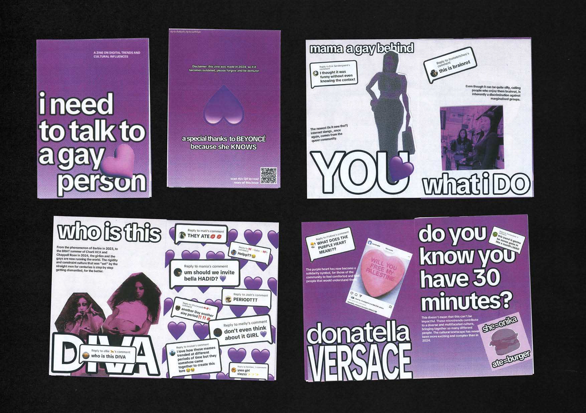
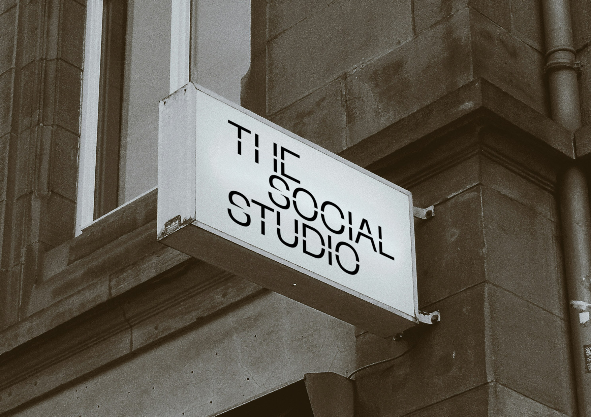
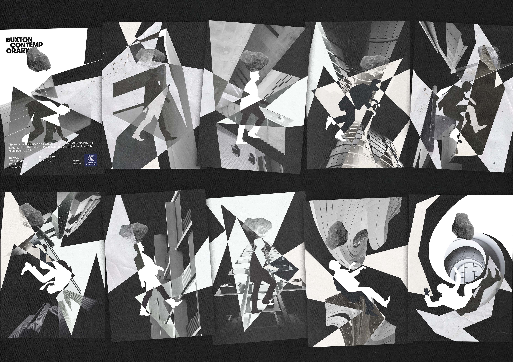
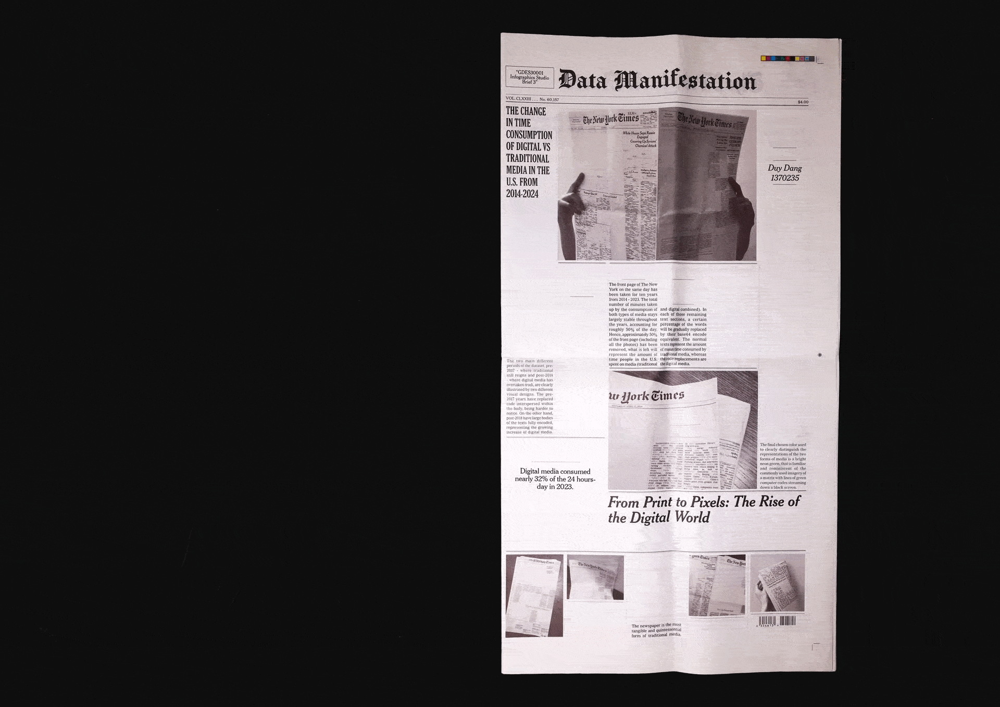
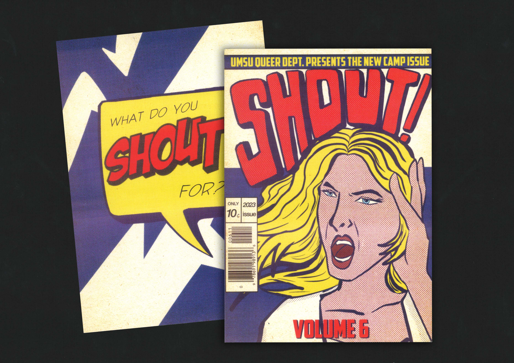
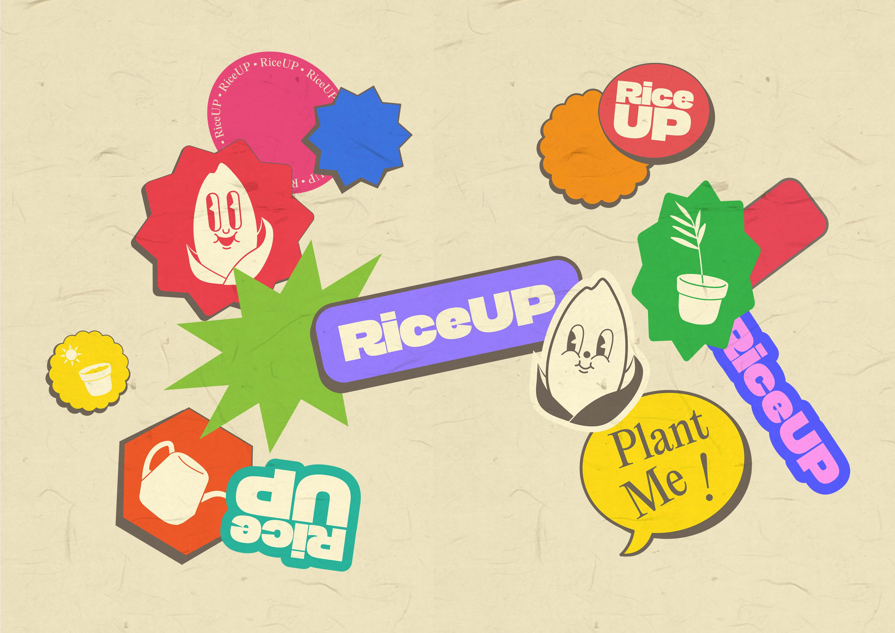

A TYPOGRAPHIC CONVERSATION — ARTIST BOOK
Typesetting, Editorial Design, Bookbinding
A publication exploring the tension between modernist and contemporary typographic ideologies through
contrasting typesetting systems and layered materials, balancing typography’s shifting relationship between function and form.

I NEED TO TALK TO A GAY PERSON — CRITICAL ZINE
Critical Design, Zine-making
A handmade zine responding to Harrison Butker’s controversial commencement speech through queer internet vernaculars, humor, and online aesthetics,
positioning marginalised communities as active forces in shaping contemporary culture.

THE SOCIAL STUDIO — REBRANDING
Rebranding, Collateral Design, Editorial Design
A rebrand for The Social Studio built around the idea of “making a cut through”, reflecting both garment construction and pathways
into the fashion industry for marginalised communities through a flexible, experimental identity system.

SISYPHUS — MYRIORAMA
Collage, Graphic Art, Conceptual Design
“Sisyphus” is a black-and-white digital collage series that reimagines the myth of Sisyphus in modern corporate culture, presented as a double-sided A6 accordion booklet.
Each page seamlessly connects to others, allowing multiple viewing combinations that reflect the endless cycle of corporate existence, inviting viewers to contemplate the absurdity of modern capitalist work culture.
Featured in the showcase "Assembled Archives" at the Buxton Contemporary, part of Melbourne Design Week 2025.

FROM PRINT TO PIXELS — Data Manifestation
Data Visualisation, Research/Information Design
A typographic newspaper project visualising the shift from print to digital media between 2014–2023,
using legibility, colour, and materiality to reflect changing patterns of media consumption.

CAMP MAGAZINE — VOLUME 6
Publication Design, Illustration
A reimagined visual identity for CAMP Magazine,
inspired by pop art and comic aesthetics to reflect the theme SHOUT—celebrating loud,
unapologetic queer self-expression through bold visuals and everyday banality.

RiceUP — Sustainable Packaging
Branding, Packaging Design, Mascot Design
RiceUp is a sustainability-driven initiative focused on creating rice-based paper products and packaging the food and beverage (FnB) industry.
A mascot and brand identity was developed, combining earthy visuals with playful sticker-inspired graphics to create an engaging and approachable identity for rice-based packaging products.
RiceUp’s innovative concept and design approach earned the initiative second place at the BeChange Maker 2024 competition.
